Início
Um prato do mundo para começar.
O ecrã inicial mostra o prato do dia, com fotografia e local de origem. Pesquise pelo nome ou pela descrição, ou percorra as receitas em destaque.
Receitas do Mundo
Receitas tradicionais de todo o mundo, cada uma com fotografia, ingredientes, passo a passo, alergénios e a história do prato. Tudo no telemóvel, sem internet e sem conta.
Grátis para descarregar · plano Completo, mensal ou anual, ou «Para sempre» em compra única
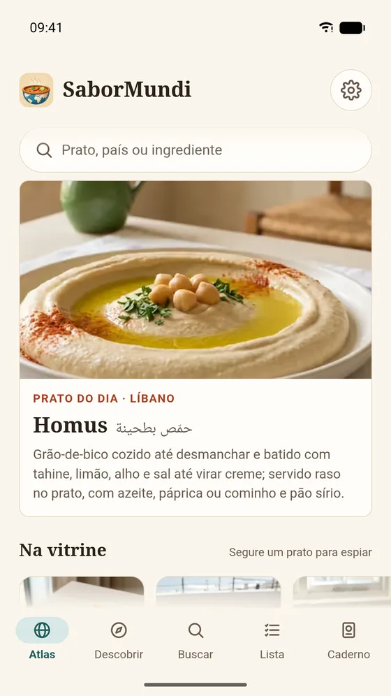
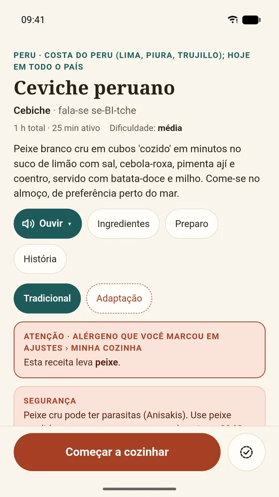
Feito para quem gosta de cozinhar e de conhecer o prato antes de meter mãos à obra.
Início
O ecrã inicial mostra o prato do dia, com fotografia e local de origem. Pesquise pelo nome ou pela descrição, ou percorra as receitas em destaque.
A receita
Cada receita tem fotografia, ingredientes, modo de preparação, alergénios e a história do prato. Ajuste as doses e escolha medidas métricas ou dos EUA.
Modo cozinha
No modo cozinha, o ecrã mostra um passo de cada vez, em letra grande, e os temporizadores ficam à vista enquanto cozinha.
Narração
A voz do próprio aparelho lê a receita em voz alta, e continua com as mãos livres.
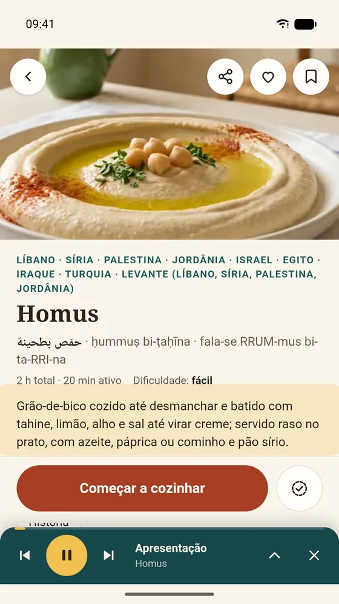
Pré-visualização
Algumas receitas abrem completas, de graça. As outras mostram a pré-visualização: fotografia, história e alergénios.
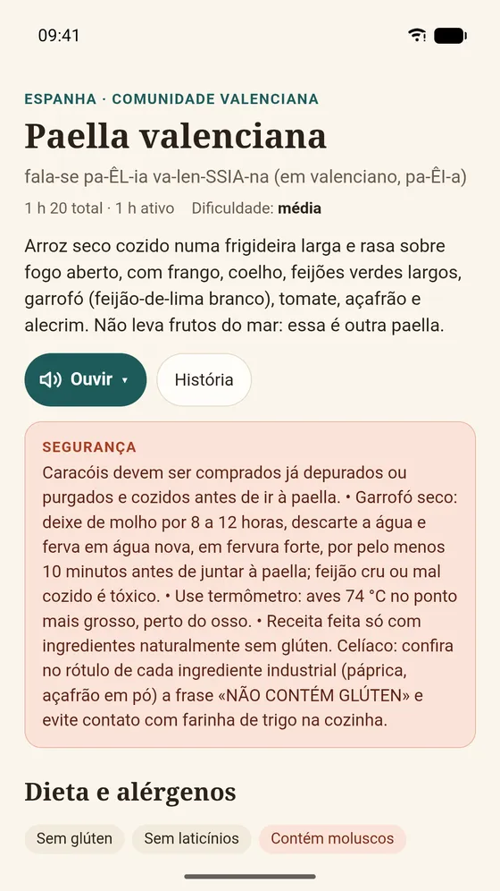
Tenho em casa
Indique o que tem na cozinha e o SaborMundi mostra as receitas que consegue fazer e o que falta. Filtre por dieta: vegetariana, vegana, sem glúten, sem lacticínios.
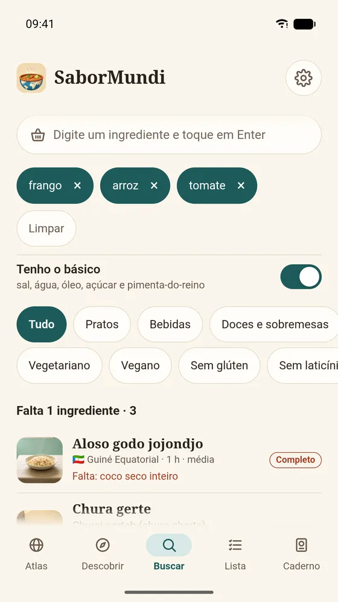
Lista de compras
Junte os ingredientes das receitas escolhidas numa lista de compras separada por secção e acrescente o que mais precisar.
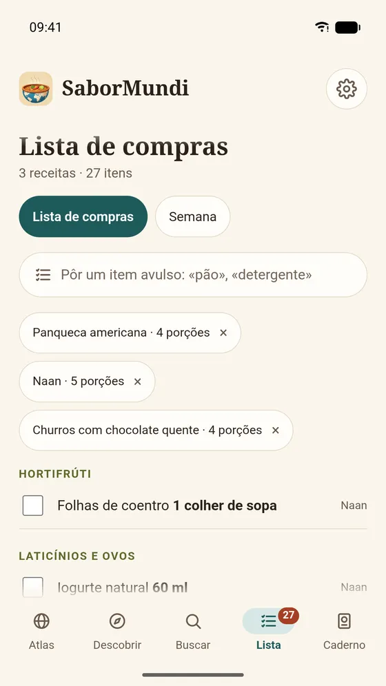
A minha cozinha
Marque os alergénios de quem vive consigo. A receita que tiver algum deles mostra um aviso no topo e destaca o ingrediente.
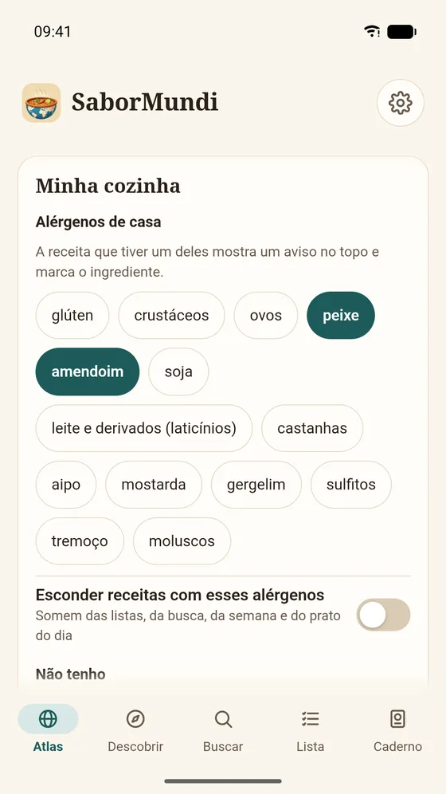
Descarregar é grátis, e algumas receitas abrem completas para provar. O plano Completo, mensal ou anual, ou a compra única «Para sempre» abre todas as receitas.
Os ecrãs da aplicação.
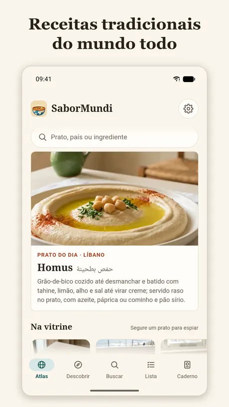
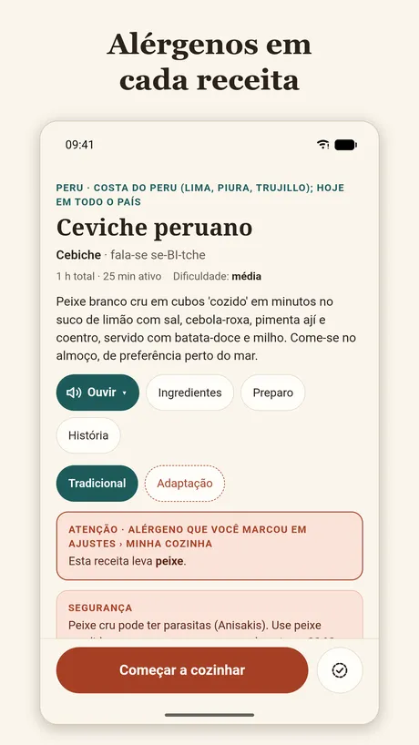
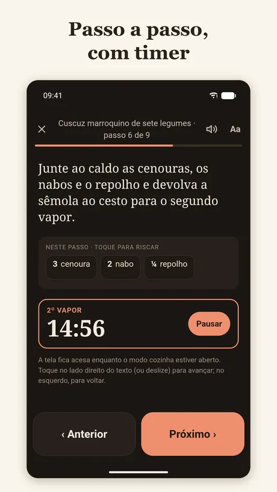
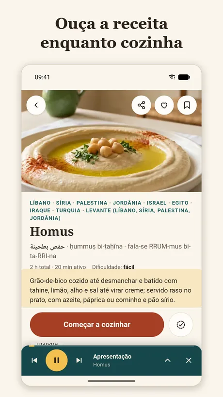
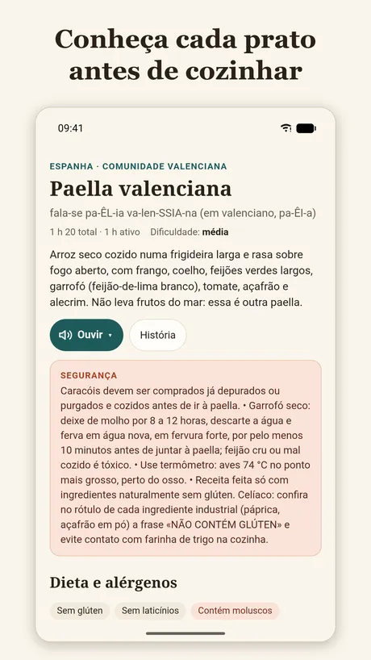
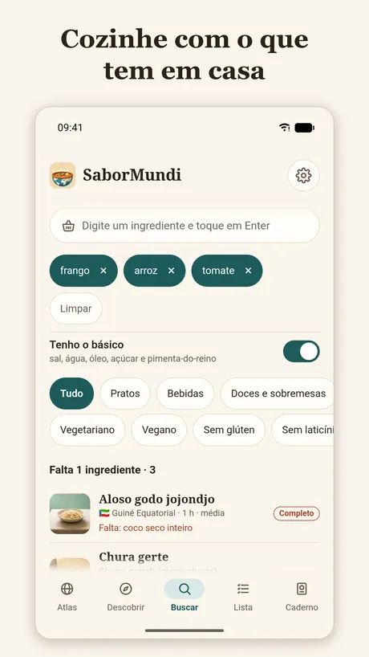
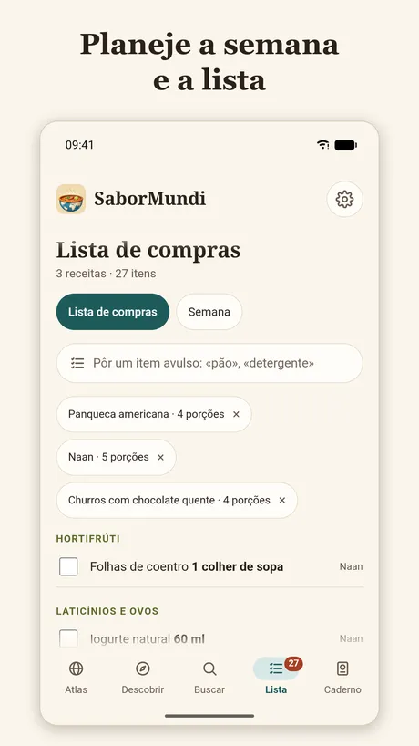
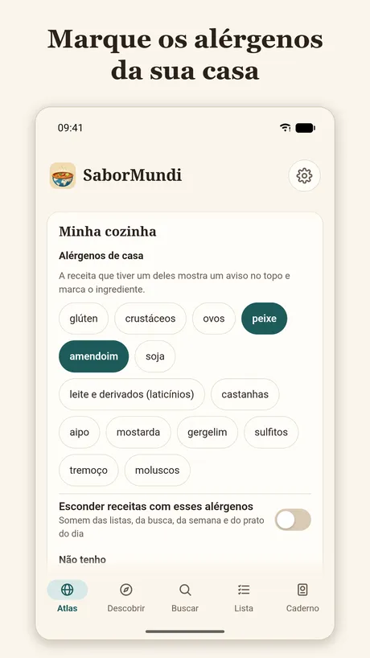
Sem conta, sem anúncios e sem recolha de dados. O SaborMundi não faz ligações próprias à internet: o que marca fica no seu aparelho e só sai quando partilha uma receita ou a lista, ou exporta a cópia de segurança.
Descarregar é grátis, e algumas receitas abrem completas, de graça. As outras mostram a pré-visualização, com fotografia, história e alergénios. O plano Completo, mensal ou anual, ou a compra única «Para sempre» abre todas. Não há anúncios.
Sim. Receitas, pesquisa, modo cozinha e lista de compras funcionam com o telemóvel desligado da rede. Só a compra passa pela loja.
Não. Não há registo. Para levar os seus dados para outro telemóvel, exporte a cópia de segurança.
Sim. Escolha entre medidas métricas e dos EUA e ajuste as doses de cada receita.
As receitas indicam os principais alergénios e avisos de segurança, mas as marcas e os ingredientes variam. Confirme sempre o rótulo de cada produto e siga a orientação do seu médico ou nutricionista.